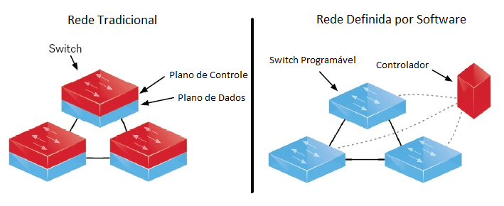
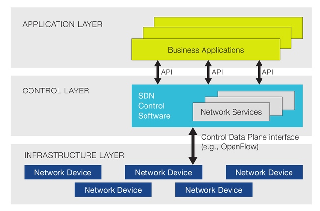
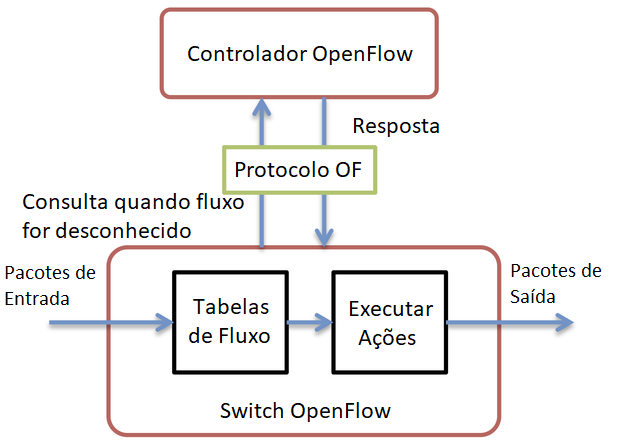

Redes Definidas por Software
Redes Definidas por Software
Redes Definidas por Software
Redes Definidas por Software

Autores: Lucas Chagas, Raphael Evangelista Filene
Universidade Federal do Rio de Janeiro (UFRJ)
Departamento de Engenharia Eletrônica (DEL)
Engenharia de Computação e Informação (ECI)
EEL879 - Redes de Computadores 2 - 2018.2
Professor: Luís Henrique M. K.
O sucesso da área de redes e da Internet é algo que pode ser observado com facilidade. Muitas das atividades realizadas atualmente estão conectadas de algum modo às redes de computadores, de tal modo que sem a Internet diversos serviços essenciais para o funcionamento da sociedade parariam de funcionar. Entretanto, essa dependência trouxe consigo uma expectativa de que a Internet estará sempre estável e funcional. Logo, implantar novas tecnologias e protocolos se torna uma tarefa árdua, dado que há um risco de interrupção de atividades que não é aceitável na conjuntura atual. Com essa inflexibilidade da arquitetura de redes, passou-se então a afirmar que a Internet está "calcificada".
Além disso, modificações de configurações de rede devem ser feitas manualmente em cada componente, com o processo de configuração muitas vezes variando dependendo do fabricante. Isso implica em maiores gastos, dado que requerem-se pessoas com conhecimento especializado de como tratar de cada equipamento, além do fato de que tratar todos os componentes em uma rede grande consome uma quantia considerável de tempo.
É com este contexto que começou a ser desenvolvida a tecnologia de Redes Definidas por Software (SDN). Esta foi feita de modo a permitir um gerenciamento automático e eficiente da rede, facilitando o controle de múltiplas redes de computadores e a implementação de novas tecnologias e protocolos.
Redes Definidas por Software (SDN) é uma tecnologia que, através da separação dos planos de controle e dados, facilita o gerenciamento da rede ao permitir que um único controlador seja capaz de controlar múltiplos dispositivos. Isso é alcançado ao tornar o controle da rede algo facilmente programável e abstraindo a infraestrutura da rede de modo a facilitar a adoção de novas aplicações e serviços de rede.
A principal característica de SDN é a separação do plano de dados do plano de controle. Na arquitetura atual, estes estão acoplados e são individuais por cada nó da rede, atuando em conjunto de modo a encaminhar os pacotes recebidos. Após a separação, o plano de controle passa a ser responsável pela parte "inteligente" da rede, determinando quais serão as rotas seguidas por novos pacotes; por outro lado, o plano de dados fica responsável somente pelo próprio encaminhamento físico dos pacotes. Com SDN, um controlador passa a ser responsável pelo gerenciamento de múltiplos nós da rede, abrindo assim a possibilidade de toda a rede ser configurada a partir de um único nó central.
Com a separação dos planos, o plano de controle passa a ser responsável pela classificação dos pacotes recebidos, definindo qual a rota que será seguida por eles. Essa definição é feita através de um controlador: este fornece à SDN a capacidade de gerenciar o fluxo de pacotes nos switches e roteadores, e é responsável por implementar as regras que classificarão os fluxos recebidos, regras essas estabelecidas pelo gerenciador de rede através de uma interface.
Para que as aplicações sejam capazes de se comunicar com a rede, e os planos sejam capazes de comunicar-se entre si, foram implementadas APIs para realizar esse diálogo. Essas APIs se dividem em: Northbound, responsável pela comunicação entre aplicações e o plano de controle, e Southbound, responsável pela comunicação entre o plano de controle e o plano de dados.
A figura abaixo apresenta uma versão simplificada da arquitetura SDN, explicitando a separação entre os planos de aplicação, controle e dados, assim como os elementos que compõem cada plano e as APIs que os conectam.
A Northbound API é responsável pela comunicação entre o plano de aplicações e o plano de controle, permitindo que aplicações responsáveis pelo controle de funções de rede possam atuar sobre a ela de modo correto. Desse modo, esta interface é responsável por transmitir os requisitos dessas aplicações para camadas inferiores, assim como retornar as possíveis respostas e estatísticas da rede para as aplicações que originaram esses requisitos.
Como dito anteriormente, o plano de controle passa a ser responsável pela parte "inteligente" da rede em uma SDN através da implementação de um controlador. De modo a facilitar a adoção de novas políticas de rede e a modificação das já existentes, é também nesse plano que é implementada a interface responsável por permitir ao administrador realizar as mudanças desejadas. Para reduzir erros e propiciar uma adesão maior à tecnologia, esta interface foi implementada de modo que todas as alterações possam ser feitas de modo simples e intuitivo.
A principal função oferecida pelo controlador é a capacidade de priorizar ou bloquear pacotes que sejam recebidos pela rede, sendo responsável por processar e definir quais serão as rotas seguidas por tais pacotes. Outras funções incluem a análise do estado da rede, a obtenção de informações sobre sua topologia e o gerenciamento dos dispositivos que a compõem. É também através dele que são definidas e impostas as regras responsáveis pela comunicação entre serviços e aplicações.
A Southbound API é um dos principais elementos responsáveis por possibilitar a separação do plano de dados do plano de controle. É através dela que o controlador é capaz de enviar ao plano de dados informações necessárias para este realizar a classificação dos pacotes, assim como reprogramar os equipamentos de modo a implementar funções como controle de fluxo e firewall. É também através desta interface que fluxos novos e, consequentemente, desconhecidos, são enviados pelos equipamentos ao controlador para que este possa classificá-los.
Após a divisão, este plano ficou responsável somente pelo encaminhamento dos pacotes na rede, sendo composto por elementos responsáveis por realizar este processo como roteadores, comutadores e switches. Entretanto, diferentemente de suas versões tradicionais, eles não utilizam protocolos de roteamento ou outros algoritmos complexos dentro de si, dado que estes são agora implementados pelo plano de controle.
O modo como o plano de dados atua depende principalmente de como o plano de controle realiza a comunicação com ele, ou seja, diferentes Southbound APIs fazem com que este plano execute suas funções de modos variados. Utilizando de exemplo o OpenFlow como Southbound API, os dispositivos no plano de dados dependerão somente de uma tabela de fluxos para examinar, tratar e direcionar os fluxos recebidos. Um fluxo, de acordo com a RFC 3917, é um conjunto de pacotes IP passando por um ponto de observação na rede durante um determinado intervalo de tempo.
Essas tabelas de fluxo atuam examinando o cabeçalho dos pacotes recebidos bit a bit, lendo informações como IP de origem e destino, portas de origem e destino, protocolo, dentre outros, e comparando-os com os valores presentes na tabela. Quando os valores encontrados forem compatíveis, ações podem ser tomadas para aquele fluxo, com estas geralmente sendo encaminhá-lo por um caminho específico ou descartá-lo. Outras ações incluem mandá-lo para a próxima tabela de fluxos ou, caso seja um fluxo novo, enviá-lo ao controlador para descobrir que ação deve ser tomada para casos similares.
As tabelas de fluxo também mantêm estatísticas de utilização, com informações a respeito da frequência em que cada entrada na tabela é examinada, que podem ser retornadas ao administrador para que este tenha maior informação e controle sobre detalhes da rede.
Uma importante característica da área de SDN é a presença de variadas ferramentas, muitas de código aberto, criadas de modo a implementar os elementos necessários para o funcionamento da tecnologia. O OpenFlow, sendo o primeiro protocolo de comunicação implementado tendo em mente a utilização em SDN, atualmente é a principal Southbound API utilizada. Muitas outras fazem uso desta API ou implentam melhorias baseando-se nela, como por exemplo o Open vSwitch (comutador virtual utilizando OpenFlow) e o OVSDB, que implementa o protocolo OpenFlow de modo a este ser compatível com o Open vSwitch. Outras ferramentas importantes são implementações de controladores, como por exemplo o FlowVisor e o OpenDaylight, que são essenciais para o funcionamento do plano de controle e consequentemente da rede.
Concebido inicialmente nas universidades de Stanford e Berkeley em 2007, este protocolo é responsável por permitir a manipulação e o acesso direto a equipamentos no plano de dados, sendo a Southbound API mais utilizada no contexto de SDN. Como explicitado anteriormente, sua funcionalidade advém do uso de uma tabela de fluxos, com os fluxos recebidos sendo comparados aos valores na tabela e o equipamento de rede executando as ações correspondentes, conforme indicado.
O Open vSwitch é um comutador virtual distribuído, de código aberto, que implementa o protocolo OpenFlow. Sua função é simular comutadores em ambiente virtuais, permitindo que máquinas virtuais comuniquem-se entre si. A principal vantagem que ele traz é a capacidade de simular variadas topologias de rede em um ambiente limitado, permitindo que testes de novas funções virtuais de rede possam ser feitos com maior facilidade.
Dentre os recursos oferecidos pelo Open vSwitch, destacam-se: criação e modificação de VLANs e firewalls, modelagem e enfileiramento do tráfego, assim como disponibilização de ferramentas para monitoramento da rede, como Netflow e sFlow.
Sendo uma tecnologia ainda em seus estágios iniciais de desenvolvimento, SDN ainda possui muitos desafios a superar antes que possa ser adotada como uma arquitetura padrão de redes. Dentre esses desafios, destacam-se os riscos de segurança, os problemas desempenho, a questão da escalabilidade, a interoperabilidade de equipamentos que fazem uso de SDN e a confiança necessária ao se utilizar uma arquitetura centralizada.
Limite de quanto um controlador é capaz de processar: dificuldades surgem quando há a necessidade de gerenciar uma rede grande.
Existem riscos de segurança associados à SDN, alguns dos quais também afetam a arquitetura de rede tradicional e outros específicos à nova tecnologia. Um exemplo que afeta ambos é o ataque de negação de serviço (DoS), dado que pode-se tentar sobrecarregar a capacidade do controlador de processar novos fluxos de modo a incapacitar a rede.
Outro desafio é aumentar o desempenho: por exemplo, reduzindo o tempo necessário para envio dos fluxos entre os planos de controle e dados, assim como do tempo necessário para o processamento dos fluxos recebidos.
Outro desafio é a fragilidade gerada ao concentrar toda a rede em um único nó, sendo este um ponto único de falha. Uma solução é a implementação da SDN por múltiplos controladores, que servem como uma garantia de que a rede continuará a funcionar caso um controlador falhe. Porém, a introdução de múltiplos controladores traz consigo a necessidade de serem implementados protocolos capazes de realizar a comunicação entre estes elementos. Desse modo, foram desenvolvidas as APIs Westbound e Eastbound para realizar a comunicação entre controladores e mantê-los sincronizados quanto as políticas de rede. Entretanto, a adoção de novas APIs traz consigo a questão de o quanto essa comunicação de diferentes controladores afetará o desempenho da rede.
Por fim, um importante aspecto de SDN é a necessidade de todos os dispositivos serem capazes de comunicarem-se entre si, comunicação esta realizada pelas APIs. Entretanto, a única API que possui uma ferramenta adotada mais amplamente é a Southbound, com o OpenFlow. Northbound e West/Eastbound APIs não são padronizadas, gerando assim uma maior possibilidade de surgirem problemas relacionados ao uso de diferentes APIs nos casos de controladores comunicando-se entre si e com aplicações na camada superior.
Um dos principais aspectos da tecnologia de SDN, quando comparada à arquitetura de rede tradicional, é a separação dos planos. Como os planos são separados, e quais as funções de cada um?
Os planos são separados em plano de controle e plano de dados. O plano de controle fica responsável pela parte "inteligente" da rede, sendo responsável por determinar quais as rotas seguidas por novos pacotes, enquanto o plano de dados é responsável pelo encaminhamento físico desses pacotes.
Explique como ocorre o encaminhamento de pacotes no protocolo OpenFlow:
Quando o fluxo dos pacotes sendo recebidos ainda não está definido, o OpenFlow envia os pacotes para o controlador de modo a este definir que ação deve ser tomada para fluxos semelhantes. Os fluxos são então enviados novamente ao plano de dados para que sejam então encaminhados de acordo com as definições feitas pelo controlador, e todo fluxo subsequente que se encaixe no mesmo elemento na tabela de fluxos seguirá pelo mesmo caminho.
[1] KREUTZ, Diego; RAMOS, Fernando M. V.; VERÍSSIMO, Paulo Esteves; Rothenberg, Christian Esteve; AZODOLMOLKY, Siamak; UHLIG, Steve. "Software-Defined Networking: A Comprehensive Survey", Proceedings of the IEEE, Janeiro, 2015. Disponível em: https://ieeexplore.ieee.org/document/6994333/ Acessado em 26 de Agosto de 2018
[2] GUEDES, Dorgival; VIEIRA, Luiz Filipe Menezes; VIEIRA, Marcos Menezes; RODRIGUES, Henrique; NUNES, Rogério Vinhal. “Redes Definidas por Software: uma abordagem sistêmica para o desenvolvimento das pesquisas em Redes de Computadores”, Minicurso do XXX Simpósio Brasileiro de Redes de Computadores e Sistemas Distribuídos, Maio, 2012. Disponível em: http://homepages.dcc.ufmg.br/~mmvieira/cc/papers/minicurso-sdn.pdf Acessado em 26 de Agosto de 2018
[3] KREUTZ, Diego; RAMOS, Fernando M. V.; VERÍSSIMO, Paulo Esteves. “Towards Secure and Dependable Software-Defined Networks”, ACM New York, Agosto, 2013. Disponível em : https://www.ietf.org/proceedings/87/slides/slides-87-sdnrg-2.pdf Acessado em 26 de Agosto de 2018
[4] BUTLER, Brandon. “What SDN is and where it’s going”, Network World, Julho, 2017. Disponível em: https://www.networkworld.com/article/3209131/lan-wan/what-sdn-is-and-where-its-going.html Acessado em 26 de Agosto de 2018
[5] OPEN NETWORKING FOUNDATION, "Software-Defined Networking (SDN) Definition". Disponível em: https://www.opennetworking.org/sdn-definition/ Acessado em 26 de Agosto de 2018
[6] SEZER, S.; SCOTT-HAYWARD, S.; CHOUHAN, P. K.; FRASER, B.; LAKE, D.; FINNEGAN, J.; VILJOEN, N.; MILLER, M.; RAO, N.. “Are We Ready for SDN? Implementation Challenges for Software-Defined Networks”, IEEE Communications Magazine, Julho, 2013. Disponível em: https://ieeexplore.ieee.org/document/6553676/ Acessado em 26 de Agosto de 2018
[7] LIGUORI, Angelo; WINANDY, Marcel. "The Diamond Approach for SDN Security", IEEE Softwarization, Março, 2018. Disponível em: https://sdn.ieee.org/newsletter/march-2018/the-diamond-approach-for-sdn-security Acessado em 26 de Agosto de 2018
[8] JAMMAL, Manar; SINGH, Taranpreet; SHAMI, Abdallah; ASAL, Rasool; LI, Yiming. "Software defined networking: State of the art and research challenges", Computer Networks, Julho, 2014. Disponível em: https://ac.els-cdn.com/S1389128614002588/1-s2.0-S1389128614002588-main.pdf?_tid=e1cc7a13-6eb8-4624-8532-332f1fd97d66&acdnat=1536675943_8409c98826bfbf8d0c9bd62a6cb6d753 Acessado em 11 de Setembro de 2018
"Este trabalho foi totalmente produzido pelos autores que declaram não terem violado os direitos autorais de terceiros, sejam eles pessoas físicas ou jurídicas. Havendo textos, tabelas e figuras transcritos de obras de terceiros com direitos autorais protegidos ou de domínio público tal como idéias e conceitos de terceiros, mesmo que sejam encontrados na Internet, os mesmos estão com os devidos créditos aos autores originais e estão incluídas apenas com o intuito de deixar o trabalho autocontido. O(s) autor(es) tem(êm) ciência dos Artigos 297 a 299 do Código Penal Brasileiro e também que o uso do artifício de copiar/colar texto de outras fontes e outras formas de plágio é um ato ilícito, condenável e passível de punição severa. No contexto da Universidade a punição não precisa se restringir à reprovação na disciplina e pode gerar um processo disciplinar que pode levar o(s) aluno(s) à suspensão;"